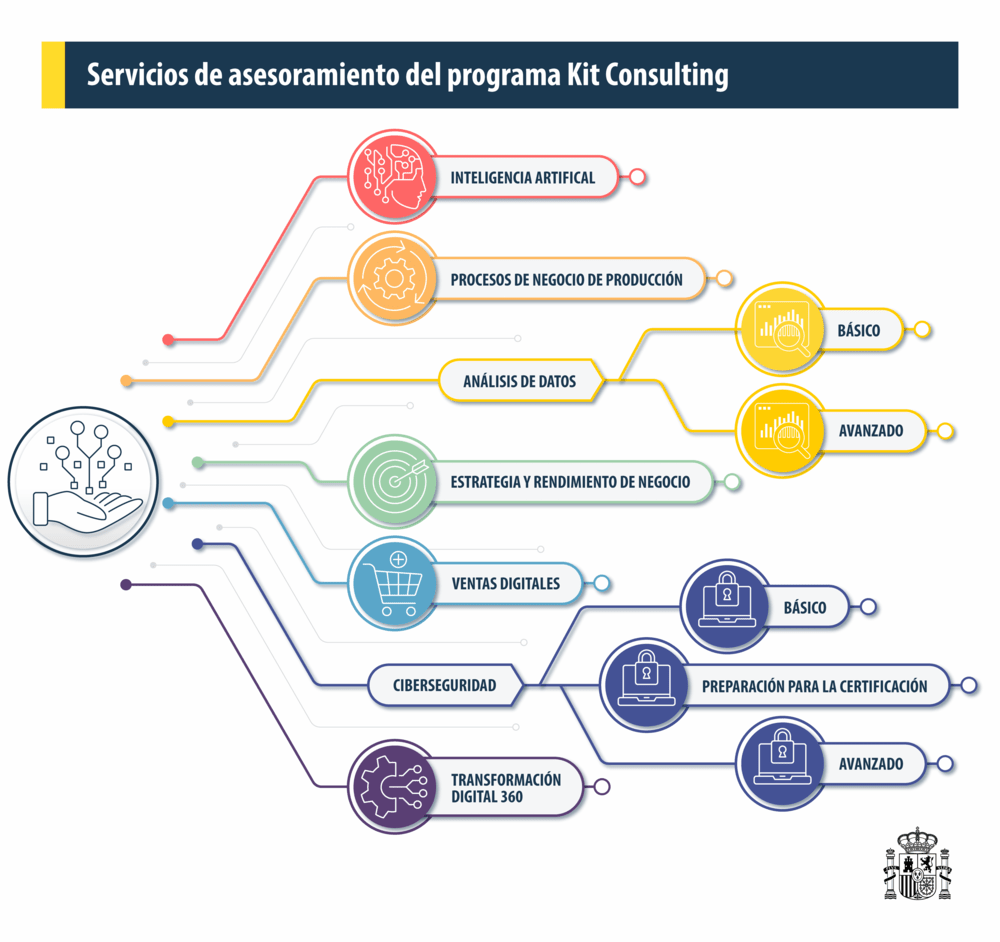

¿Qué puedo hacer en mi empresa con el bono digital?
Las pymes beneficiarias deberán destinar el bono a la contratación de uno o varios servicios de asesoramiento de un catálogo compuesto por varias categorías en áreas clave del proceso de transformación digital.
Servicios de Asesoramiento Disponibles
- Servicio de Asesoramiento en Inteligencia Artificial - Asesoría destinada al desarrollo de un plan de inteligencia artificial (IA) que establecerá la inversión requerida y las medidas necesarias para su adopción.
- Servicio de Asesoramiento en Análisis de Datos (Básico) - Asesoría para la puesta en marcha de un plan de análisis de datos adaptado al negocio, comprendiendo el estudio de la inversión y formación necesaria.
- Servicio de Asesoramiento en Análisis de Datos (Avanzado) - Plan para empresas que ya cuentan con un sistema básico y necesitan uno más avanzado.
- Servicio de Asesoramiento en Ventas Digitales - Asistencia para establecer la inversión y técnicas de marketing digital para mejorar el rendimiento de ventas en línea.
- Servicio de Asesoramiento en Procesos de Negocio o Producción - Identificación de áreas de mejora en la operativa de la pyme, con el uso de IA para definir un plan de mejora.
- Servicio de Asesoramiento en Estrategia y Rendimiento de Negocio - Consultoría para mejorar el posicionamiento competitivo de la empresa mediante tecnologías de IA.
- Servicio de Asesoramiento en Ciberseguridad (Básico) - Asesoría para desarrollar un plan de ciberseguridad básico adaptado a las necesidades de la pyme, ajustándose a los estándares de la ISO 27001 y ENS.
- Servicio de Asesoramiento en Ciberseguridad (Avanzado) - Para empresas con protección básica que desean mejorar y conocer sistemas de protección más avanzados.
- Servicio de Asesoramiento en Ciberseguridad (Preparación para la Certificación) - Para empresas que buscan implementar sistemas avanzados de protección con el uso de IA, y prepararse para la certificación.
- Servicio de Asesoramiento "360" en Transformación Digital - Consultoría integral para la transformación digital de la pyme, incluyendo el uso de IA y otras herramientas digitales en todas las áreas de impacto de la organización.
Importante: Para acceder a los servicios de asesoramiento avanzado, es imprescindible haber completado primero el servicio básico correspondiente. Los Asesores Digitales son los responsables de llevar a cabo los servicios y disponen de un plazo de 3 meses desde la validación del acuerdo (salvo que la convocatoria establezca un plazo superior).
